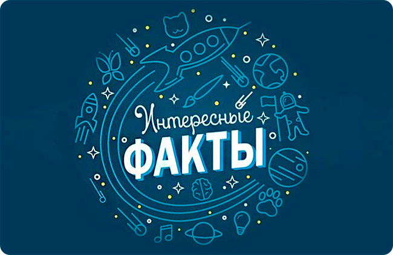

|

|
- Я родился 26.04.2003.
- У меня есть брат-близнец, мы вместе учимся и его зовут Андрей.
- Я телец по знаку зодиака.
-
За все время учебы я всегда стремился к отличию, поэтому в первой школе был круглым отличником, вторую школу закончил с парой четверок и сейчас,
в университете, иду на красный диплом.
- Одной из моих самых любимых компьютерных игр является MOBA League of Legends, с которой связаны некоторые из проектов по учебной деятельности.
- Одно из моих самых любимых блюд - салат-цезарь с тигровыми креветками.
- Еще во время школы я писал олимпиаду по информатике в 7 здании КНИТУ-КАИ им. А.Н.Туполева:)
|
|
|